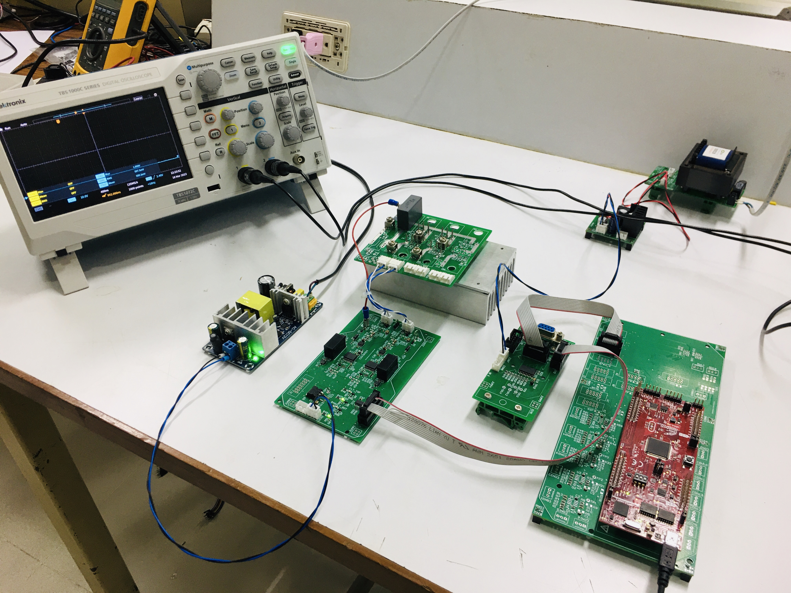

MODULE 01 / EP.1
Hardware Connection & Protection
เตรียมชุดทดลอง ทำความเข้าใจ C2000, Shield / Buffer, Signal Path และหลักการป้องกัน Controller ก่อนเชื่อมเข้าสู่ระบบภายนอก
ดูตัวอย่างบน YouTube →
หลักสูตรเริ่มต้นของ EV Drive & Control Learning Hub ที่พาผู้เข้าอบรมจาก Hardware Connection ไปสู่ Embedded Control ด้วย MATLAB / Simulink และการตรวจวัดผลจริงด้วย Oscilloscope
เหมาะสำหรับผู้ที่ต้องการข้ามช่องว่าง จากการเรียนทฤษฎีหรือ Simulation ไปสู่การเชื่อมต่อ Controller และทดลองกับ Hardware จริง
ผู้สอนด้านไฟฟ้า อิเล็กทรอนิกส์ Power Electronics และ Embedded Systems
วิศวกรที่ต้องการเริ่มต้น Embedded Control และ Motor Drive จาก Hardware จริง
นักศึกษาระดับปริญญาตรี โท หรือเอก ที่ต้องการพัฒนา Experimental Skills
ผู้ที่ต้องการสร้าง Platform สำหรับต่อยอด Inverter, PMSM, FOC และงานวิจัย
ปัญหามักไม่ได้อยู่ที่ Algorithm เพียงอย่างเดียว แต่เกี่ยวข้องกับ GPIO, Signal Level, Ground, Buffer, Protection, Pin Mapping และ Measurement
ผู้เข้าอบรมจะเรียนรู้ ตั้งแต่การเชื่อมต่อ Hardware, การตรวจสอบสัญญาณ, การ Build / Download ไปจนถึงการวัด PWM บน Oscilloscope
เข้าใจบทบาทของ Controller และ Hardware Interface ในระบบ Control
เข้าใจ Shield, Buffer, Ground, Signal Direction และ Protection
เข้าใจ Workflow Model → Build → Download → Hardware
กำหนด Frequency, Duty Cycle และตรวจสอบผลจริง
ใช้ Oscilloscope ตรวจ Waveform และวิเคราะห์ปัญหา
นำ PWM ไปต่อยอด Gate Driver และ 3-Phase Inverter
ทุก Lab จะเชื่อมโยงตั้งแต่ Software จนถึง Measurement เพื่อให้ผู้เข้าอบรมเห็นเส้นทางจริงของข้อมูล และสัญญาณควบคุม
Model & Code Generation
Embedded Controller
Interface & Protection
Real Control Signal
Measure & Validate
เตรียมชุดทดลอง ทำความเข้าใจ C2000, Shield / Buffer, Signal Path และหลักการป้องกัน Controller ก่อนเชื่อมเข้าสู่ระบบภายนอก
ดูตัวอย่างบน YouTube →
เรียนรู้ Workflow จาก Simulink Model ไปสู่ Code Generation, Download ลง C2000 และสร้าง PWM ที่ตรวจวัดได้บน Hardware จริง
ดูตัวอย่างบน YouTube →จุดสำคัญของหลักสูตรคือ ผู้เรียนไม่ได้จบการเรียนรู้เมื่อจบวันอบรม แต่มี Hardware Platform สำหรับนำกลับไปทดลอง Debug และเตรียมตัวเข้าสู่ Level ต่อไป
ก่อนจบหลักสูตร ผู้เข้าอบรมจะได้รับโจทย์ ให้สร้าง PWM ตาม Specification และพิสูจน์ผลด้วย Oscilloscope
ผู้เข้าอบรมต้องสามารถ สร้าง Model, Build, Download, เชื่อมต่อผ่าน Buffer, วัด Waveform และอธิบาย Frequency กับ Duty Cycle ของสัญญาณได้
เพื่อใช้เวลาในห้องอบรม กับ Engineering Practice มากที่สุด ผู้เข้าอบรมควรติดตั้ง Software ให้พร้อมล่วงหน้า
ผู้เข้าอบรมจะได้เห็นแนวทาง
ใช้ AI เป็น Engineering Copilot
สำหรับการวิเคราะห์ปัญหา,
Debugging,
อธิบาย Configuration
และช่วยพัฒนา Model / Code
แต่ทุกผลลัพธ์ต้องผ่าน
Measurement
และ Experimental Validation
บนระบบจริง
วันอบรม, ค่าใช้จ่าย, รายละเอียด Training Kit และระบบลงทะเบียน จะประกาศเมื่อผ่าน การตรวจสอบ Course Package และกระบวนการที่เกี่ยวข้อง เรียบร้อยแล้ว
กำลังเตรียมเปิดรับสมัคร